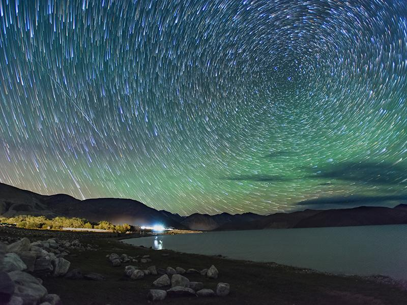

The Khardungla Pass is famous for being one of the highest motorable roads in the world with an elevation of 5359 metres above the sea level.
Anyone who plans a bike trip to Ladakh ensures that they add one day of riding a bike through the Khardungla Pass to reach Nubra Valley.
The pass has several small villages located on its way, all of which have little to no population.
The Khardungla Pass was once a part of the ancient silk route, hsence has a huge historical importance.
The condition of the road here varies from season to season. While it remains closed during the winters due to snowfall and landslides, the best time when you can venture out here is during the summer months between May to August.
One of the most arresting moils of nature in Ladakh is Sangam, the confluence Indus, and Zanskar Rivers. Nestled between the stunning mountains of the cold desert, there is a vantage point at about 35 km from Leh near the village of Nimmu, on the Leh to Srinagar Highway, where the picturesque Sangam of these opulent rivers travelers can be witnessed.
Stay Overnight at Camps
This lake of Ladakh deserves more of your time than just clicking a few pictures and scrambling back to Leh. Stay in one of the camps near the lakeside and witness the different shades of Pangong Tso. The night brings in the stars and you seem to almost reach them. The cosiness of the tent and the soft sound of the wind against its walls are sweet to the ears. Not to
forget the beautiful sunrise over the mountains in the morning. There are no permanent hotels near the lake and homestays are not located near the shore, so camps near the Pangong Lake are your best bet.

The Magnetic Hill in Leh is famous for its gravity-defying occurrence. As a natural phenomenon, gravity attracts things towards the earth, which means they fall downwards when let free. However,
at this majestic destination, objects appear to be moving uphill when let free.Magnetic Hill lies somewhere along the Leh-Kargil-Srinagar National Highway in the Trans-Himalayan region at an altitude of 14,000 feet. Sindhu river flows to the east of the hill, making it a scenic location to capture photographs. All Leh Ladakh travellers would agree that Magnetic Hill is one of the best places to visit in Leh Ladakh.